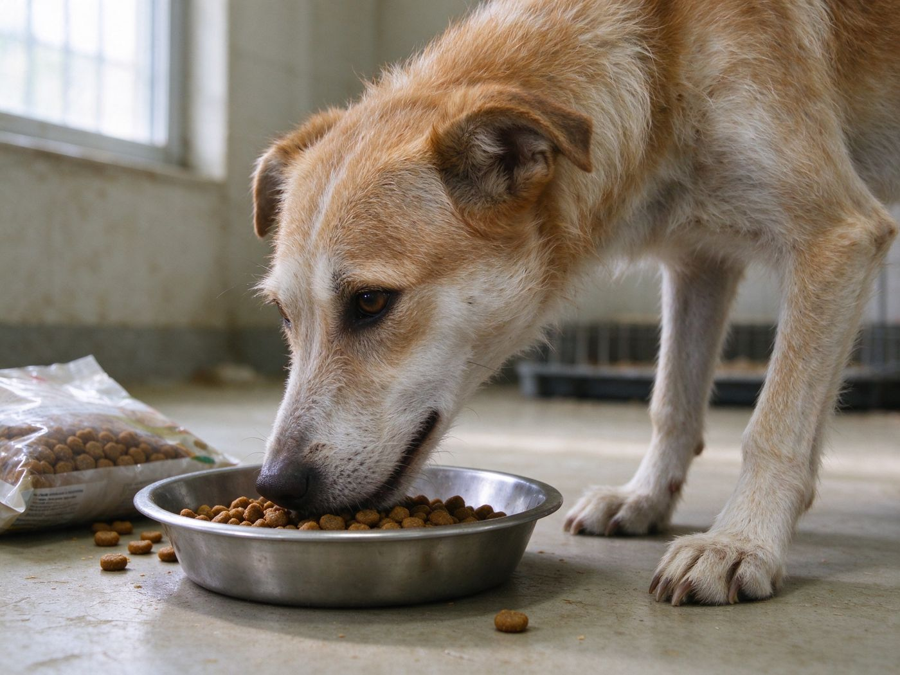
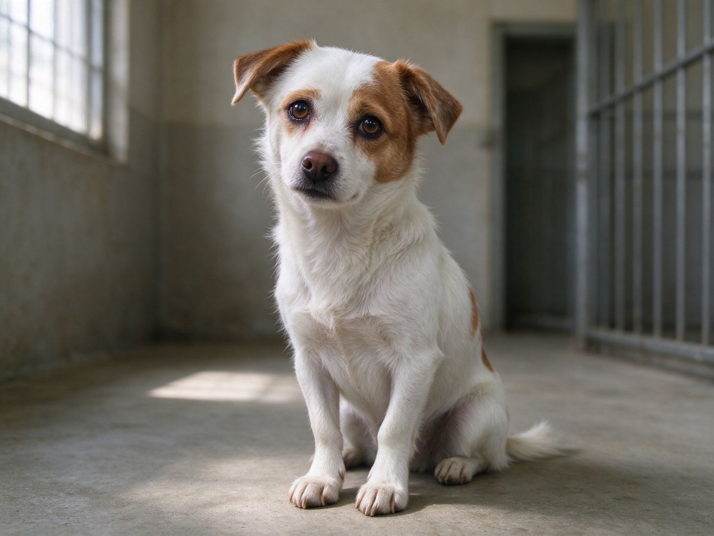

Animais atendidos pelos canis
6 de 48 animaisThor
Porte médio · 2 anos · Macho Canil São Francisco · Serra/ESMel
Porte pequeno · 1 ano · Fêmea Canil São Francisco · Serra/ES
Caramelo
Porte médio · 3 anos · Macho Abrigo Viralata · Vila Velha/ESLuna
Gata · 4 anos · Fêmea Patinhas de Anjo · Vitória/ES
Bidu
Idoso · 12 anos · Macho Canil São Francisco · Serra/ES